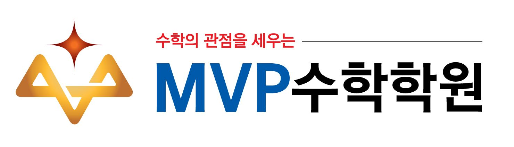

이해할 때까지 함께
수업 시간 외에도 선생님의 시간을 내어 질문에 열정적으로 답변해 주시고 이해가 될 때까지 반복 설명해 주셨습니다.

신규 상담 ↗칠곡지구 · 대구북구
매일 조금씩, 스스로 해내는 힘.
수학과 함께 학생의 자신감도 자랍니다.
초등 · 중등 · 고등 수학
학생의 현재 공부 습관과 풀이 과정에서 출발합니다.
MVP의 생각
작은 성취가 쌓이는 공부처음부터 잘하지 않아도 괜찮습니다.
오늘의 한 걸음을 함께 쌓아갑니다.
문제를 보자마자 계산하기보다, 무엇을 구해야 하는지부터 확인합니다. 주어진 조건에 표시하고 그림과 식에 옮겨 보며, 놓친 조건은 없는지 하나씩 짚어갑니다. 빨리 푸는 것보다 문제를 정확히 읽는 습관이 먼저라고 생각합니다.
수학 공부는 자신의 풀이 과정을 적는 데서 시작합니다. 어떤 조건을 사용했는지, 왜 이 식을 세웠는지 한 줄씩 남기면 이해한 부분과 막힌 부분이 드러납니다. 틀렸을 때도 답만 고치지 않고, 생각이 어긋난 지점을 찾아 다시 적는 과정을 중요하게 여깁니다.
성실함은 하루에 많은 문제를 푸는 모습만을 뜻하지 않습니다. 학생에게 필요한 공부를 정하고, 매일 시작하고 끝내는 경험을 쌓는 것입니다. 한 문제의 풀이를 끝까지 적고, 어제 막혔던 문제를 다시 풀어내는 작은 성취가 “나도 해낼 수 있다”는 자신감의 바탕이 된다고 믿습니다.
멧뷰 중2 서술형시험
생각을 쓰는 연습정답만으로는 학생이 어디까지 이해했는지 알기 어렵습니다.
직접 적은 풀이를 통해 생각의 흐름과 다시 배워야 할 부분을 살펴봅니다.
같은 길이, 같은 각, 주어진 수치를 그림에 표시하고 어떤 개념을 사용할 수 있을지 생각합니다. 서술형 풀이는 조건을 찾아 자신의 말과 식으로 정리하는 데서 출발합니다.
“두 삼각형이 합동이다”라는 결론에 앞서, 어떤 변과 각이 같고 어떤 합동 조건이 성립하는지 적습니다. 결론까지의 근거를 연결하는 연습이 설명할 수 있는 이해로 이어집니다.
처음부터 빈틈없는 풀이를 기대하지 않습니다. 학생이 직접 적은 생각에서 출발해, 빠진 근거와 잘못 적용한 개념을 첨삭으로 확인합니다. 틀린 부분을 이해하고 다시 써보는 것까지 공부의 과정으로 생각합니다.
멧뷰 중2 서술형시험의 실제 학생 답안과 첨삭 기록입니다. 풀이 속 오류를 짚고 다시 배워가는 과정을 담았습니다.
멧뷰모의고사 × 학교 내신
최근 시험지 분석 결과멧뷰모의고사와 실제 내신시험의
문항 연계를 학교별로 정리했습니다.
분석 대상: 2026학년도 1학기 기말고사. MVP 자체 기출분석 자료의 ‘문항 적중률’ 기준입니다. 학교별 산정 기준은 각 항목에 표시했으며, ‘사고과정 연계율’과는 별도입니다.
학생 이야기
졸업생 · 영수증 후기공부 습관부터 자신감까지.
후기를 눌러 자세한 내용을 읽어보세요.
검색 결과가 없습니다. 다른 단어로 검색해 주세요.
MVP와 함께한 학생들의 이야기입니다. 후기를 누르면 전체 내용을 읽으실 수 있습니다.
새로운 시작을 응원합니다
졸업생 합격 대학MVP와 함께 공부한 학생들이
새로운 배움을 이어가는 학교들입니다.
MVP 졸업생 합격 대학
매일의 공부, 그 이후까지
학생에게 “열심히 해라”라고 말하는 것만으로 공부가 이어지지는 않습니다. 오늘 할 수 있는 공부를 정하고, 한 문제라도 스스로 풀이를 적어 끝내보는 경험이 필요합니다. MVP는 처음부터 잘하는 학생보다, 어제보다 한 걸음 더 나아가려는 태도에 마음을 둡니다. 학습 관리도 학생을 재촉하기보다 매일의 공부를 이어갈 수 있도록 돕는 과정이어야 한다고 생각합니다.
막힌 문제를 다시 펼쳐보는 일, 모르는 것을 질문하는 일, 틀린 풀이를 자기 손으로 고쳐보는 일. 당장 점수가 오르지 않아도 그 안에는 분명한 노력이 있습니다. 단디에듀의 학습 관리와 공부 코인 같은 작은 응원도, 학생이 자신의 노력을 알아보고 내일 다시 시작할 힘을 얻는 데 의미가 있다고 생각합니다.
좋은 성적과 합격은 소중한 결과입니다. 하지만 MVP가 학생에게 남기고 싶은 것은 그 결과만이 아닙니다. 하기 싫은 날에도 시작해 보고, 어려운 문제 앞에서 한 줄씩 생각을 이어가며 끝내 해낸 기억입니다. 그 경험이 쌓여 수학뿐 아니라 앞으로 만날 낯선 도전 앞에서도 “나도 해볼 수 있다”고 말할 수 있기를 바랍니다.
LET'S FIND YOUR VIEW POINT
학생의 현재에서 시작해
다음 한 걸음을 함께 찾습니다.
별도의 진단시험은 진행하지 않습니다. 학생이 실제로 풀었던 시험지와 공부 중인 문제집을 바탕으로 현재의 학습 상황과 고민을 함께 이야기합니다.
아래에서 가까운 지점을 선택해 예약하거나 전화하실 수 있습니다.
{kind=link}
{kind=link}
{kind=link}